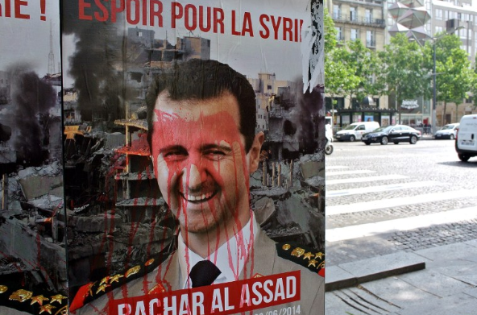

Ongoing protests call to end government oppression in Syria


Throughout Swieda and the south of Syria, protests which have lasted the past two months call for an end to the regime of the president Bashar Al-Assad, who has been in power for 23 years. The President has a track record of ending protests through use of the military, such as in 2011, during the Syrian revolution of dignity, when the Syrian government was responsible for the slaughter of 2000 protesters in one day- a massacre which still haunts the public conscience. This heavy-handed response resulted in the country being plunged into an ongoing and continually escalating civil war, involving major military powers such as NATO and Russia.
The war in Syria has forced over 3 million people to flee, over two thirds of which to Turkey. The country has been left extremely unstable and divided, not to mention in ruins, but the war marches on. Syria has been split into multiple areas, in which the major powers such as the main Syrian government have faced resistance from the Kurdish forces. There are multiple areas under control of many different forces, some being aided by the Americans, some under the control of ISIS. The fighting for control of the region is being slowly won by the government forces, receiving aid from Russia and Iran, providing both soldiers and equipment such as jets and tanks, resulting in casualty rates skyrocketing.
The protests were sparked by the Syrian government's removal of the country's fuel subsidy, causing the cost of living to skyrocket- for instance, the price of petrol has increased by 50%. This combined with the Syrian pound being extremely weak has made it exceedingly difficult for the people of Syria to keep up with the cost of living. Swieda is an agricultural and mountainous area, worsening this issue by making it difficult for help to be rolled out to its population. In territory held by the president, around 90% of the Syrian people live in poverty and an enormous 12 million do not know when they will have their next meal. Meanwhile, President Bashar Al-Assad, with an estimated net worth of $1-2 billion has repeatedly failed to bring security, justice and development to the people of the province. Although the government said they would protect Swieda, it has still faced multiple attacks by the ISIL. The people are also angered by the country working with the Russian and Iranian government, feeling that the involvement of other nations has massively undermined Syria’s economic and political influence.
One group has been protesting more than most are the Druze community. The Druze are a religious minority in Syria, except for the city of Swieda, in which they make up a large majority of the population and yet they have been extremely oppressed by the regime and demand more freedom and rights from the government. The Druze have argued that they should be able to protect their own communities as they cannot rely on the government to protect them from ISIL. Under the Syrian government, there have been several incidents of ISIL fighters bombing Druze communities, killing some and spreading fear to all.
All this gets us ready to understand the protests fully. On the 19th of August, thousands of people took to the streets, eager for change in a system that won’t allow for it. The president responded to the protesters who wanted him deposed by ordering the firing of tear gas and the use of live bullets. So far no one has been killed, but as the protests go on, the chances of violence are ever increasing. The men, women and children of the protests are taking the risks to stand up for their own freedom, stating that they do not fear Assad, and one brave protester has gone on record saying, “We will have freedom in spite of you, Assad.”
The city of Swieda is a mostly loyalist area who are in support of the president, but the work of many shops and public transportation has been ground to a halt by the protesters who have begun to cause havoc in the city. This has caused many high-ranking members of the government to have to cancel their meetings and some have even been leaving the city and heading to the Syrian capital of Damascus to conduct their business free of protesters. The protesters have been desecrating and removing pictures of the president, exposing a deep-seated public hatred for him and his practices. Many people blame Assad for the war crimes committed by his armies and the corruption within his government.
Lately leaders of the Druze have given their blessing to the protesters, however they have not stated their opinion on the protesters calls for the removal of the president. Protesters have called for dignity- a reference to the aforementioned Syrian revolution of dignity. Now the people have regained the confidence to fight again, although they are heading into a major danger. Many protesters have needed to adopt fake names as to evade punishment for practising what should be their right to protest. All we currently know for sure is that the protests are spreading quickly, largely because high levels of poverty is a serious issue all throughout the president's territory, motivating people to take to the streets.
However, as the protests continue to grow, over 2000 people from many walks of life are taking to the streets, to free themselves and others from the regime that employs torture on a mass scale and holds the population under their fingers. We can’t possibly predict the outcome, but it is certain that the people of Syria are determined to continue in their fight for justice and the long overdue fall of the Al-Assad government.